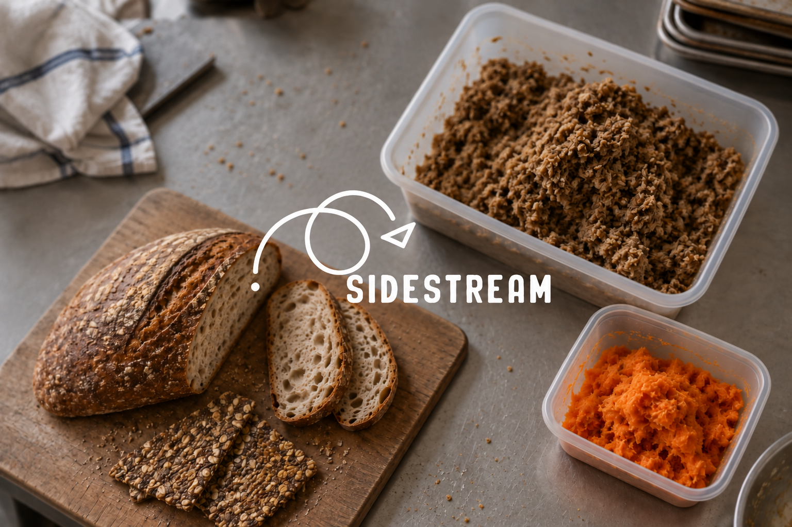
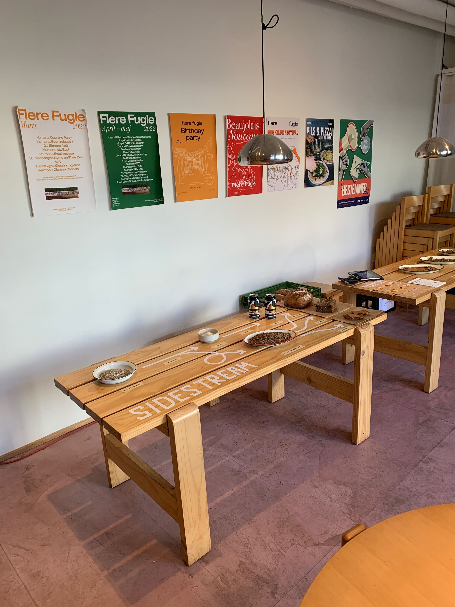
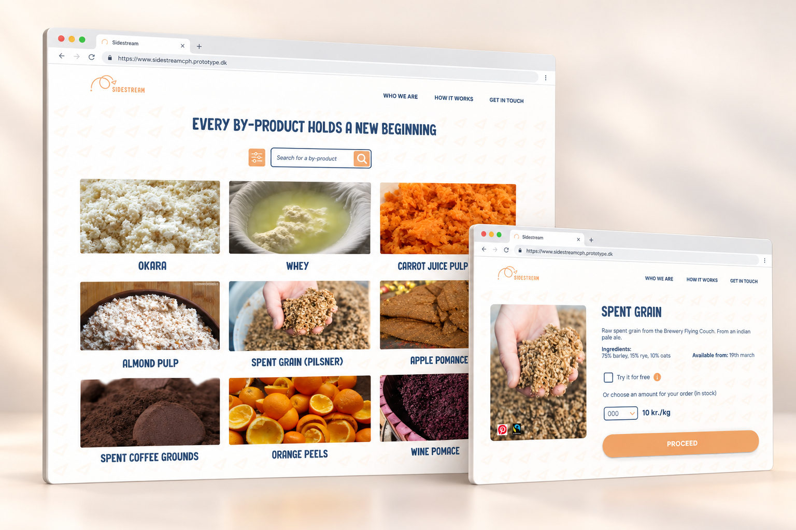
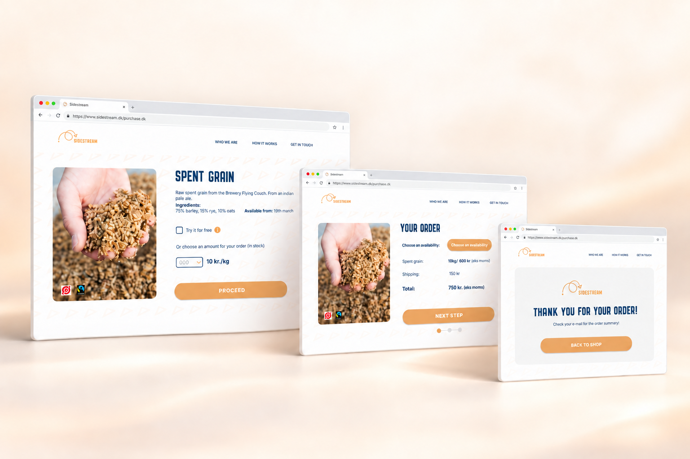
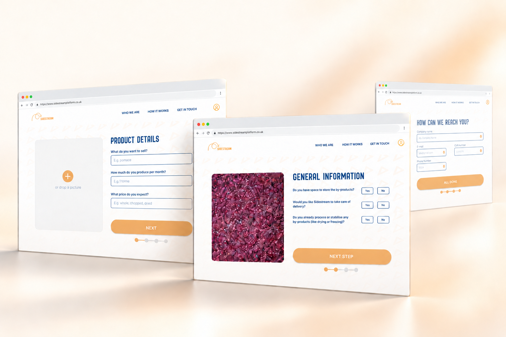
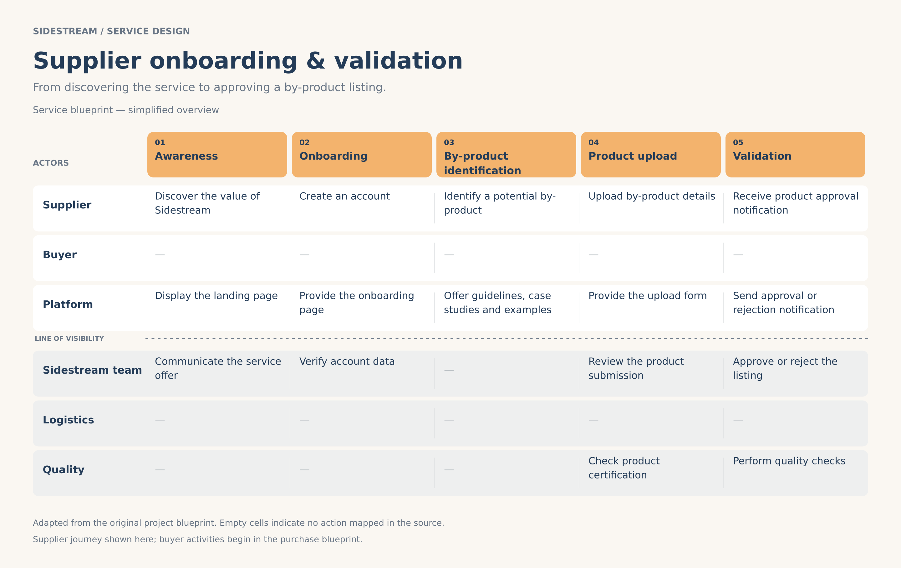
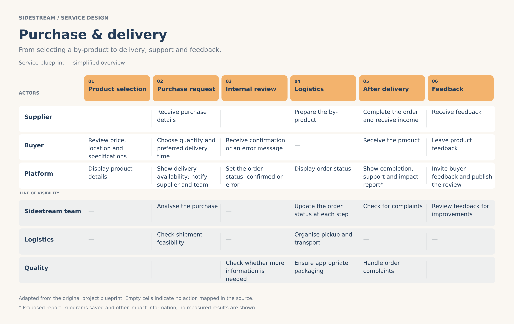
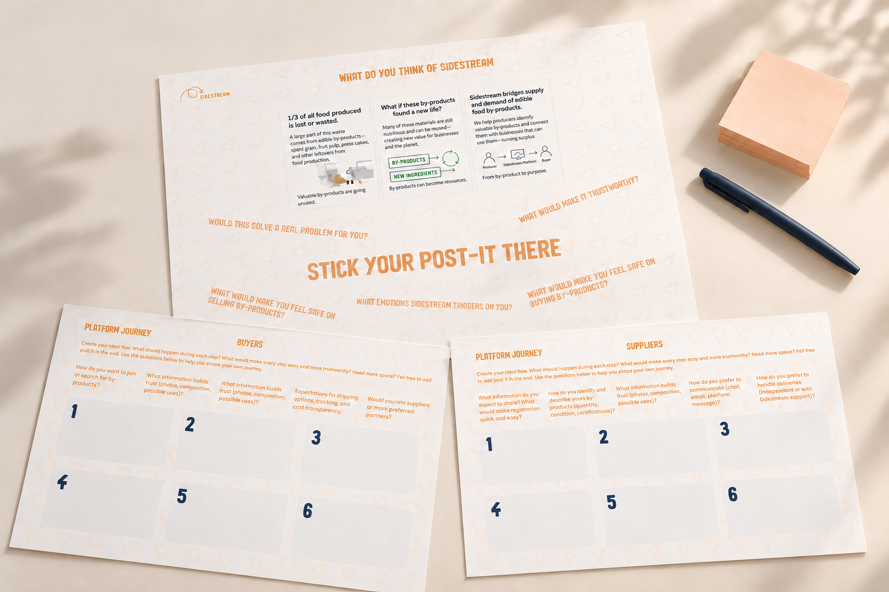

Service Systems Design / 02
Sidestream Platform
Connecting service thinking and digital design to give food by-products a new purpose.

Problem
Sidestream needed a clearer digital experience to help businesses buy and sell edible food by-products. My challenge was to make the existing interface easier to navigate and the steps of each exchange easier to understand.
Solution
I refined the UI and key buyer and seller flows, working with developers to keep the implementation faithful to the prototype. Through service analysis, I also proposed product reviews, purchase-specific impact information and clearer seller guidelines as opportunities for future development.
Project context
During my internship at Sidestream in Copenhagen, my main goal was to improve the platform’s UI/UX. I explored how suppliers, buyers and the Sidestream team interact across product listing, validation, purchasing and delivery, connecting interface decisions with the wider service.

I analysed the existing service model through blueprints and prepared surveys for partners and prospective clients. My design choices focused on clearer product information, more consistent interfaces and guided user flows. I also designed a workshop to explore trust and user expectations, which the team conducted after my internship ended.
- Year
- 2025
- Tools
- Figma · Squarespace
- SSD methods
- Service blueprinting · User flow mapping · Survey design · Workshop design
- Category
- Service Systems Design





